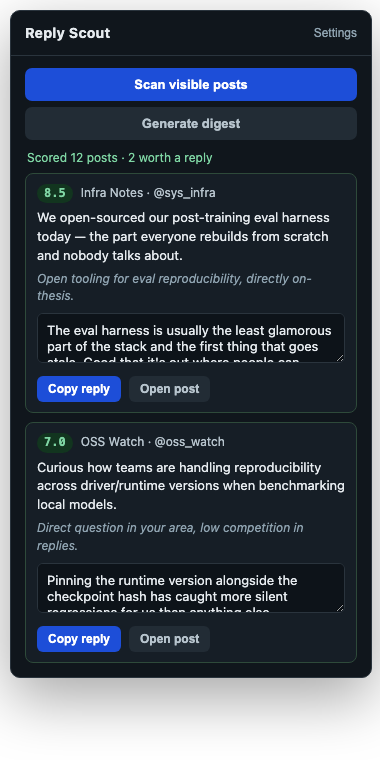

Reads the posts on your screen, scores each one against a thesis and rubric you write, and drafts a reply worth sending — you edit, copy, and post it yourself. Nothing goes out without you.

One button scores what's on screen. You decide what actually gets a reply.
Up to 15 posts on screen get scored against your thesis and rubric, right where you are — Home or any List.
Each result comes with why it scored that way, and a drafted reply for anything worth engaging.
You're always the last filter. Edit the draft, copy it, paste it on the real post, and send it yourself.
Thesis, rubric, digest focus, and voice samples are plain text you write and edit in settings. Nothing is fixed — the same three signal colors the panel uses to sort your feed are yours to define.
The one or two sentences you'd defend in every reply, and exactly how a post earns a high score against it.
Paste 3–8 real posts you've written. Real examples beat any style instruction — this is what keeps drafts sounding like you.
Bring your own key. Full vision support for image-heavy posts, one small request per scan.
Point it at your own server and nothing leaves your machine. Works with reasoning-aware models via a token-budget-safe scoring path.
chrome://extensions, turn on Developer mode.reply-scout folder.